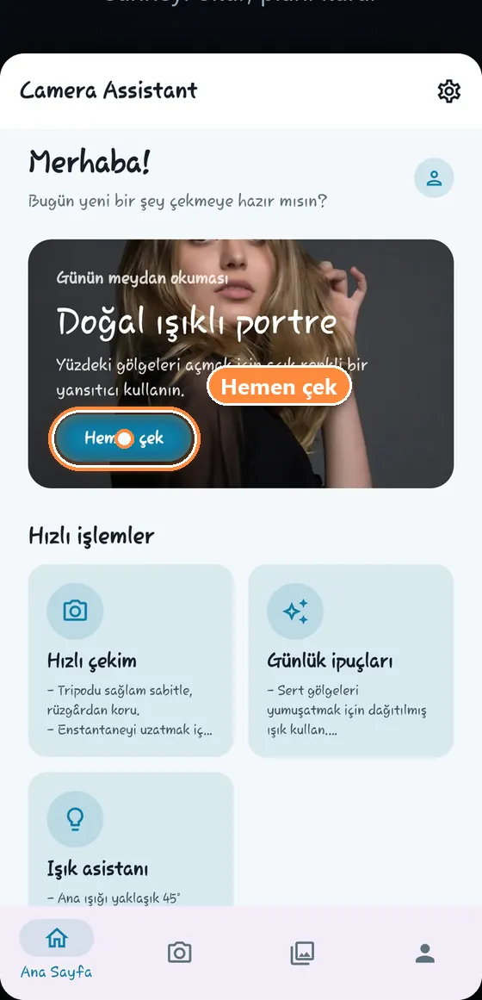
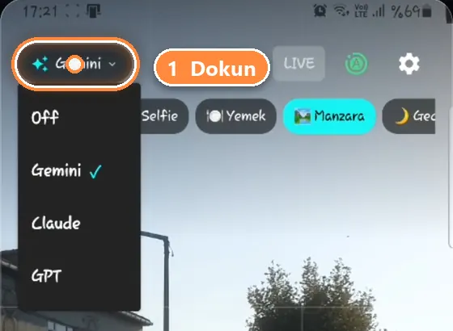
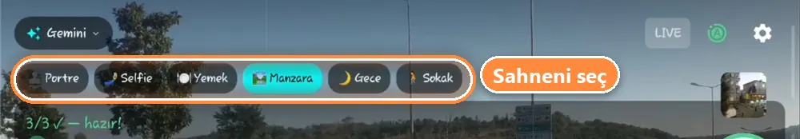
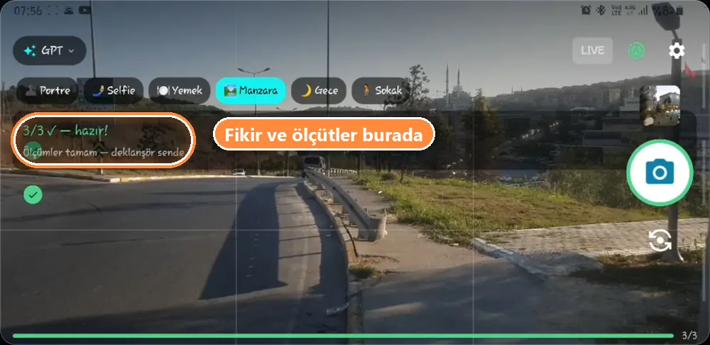
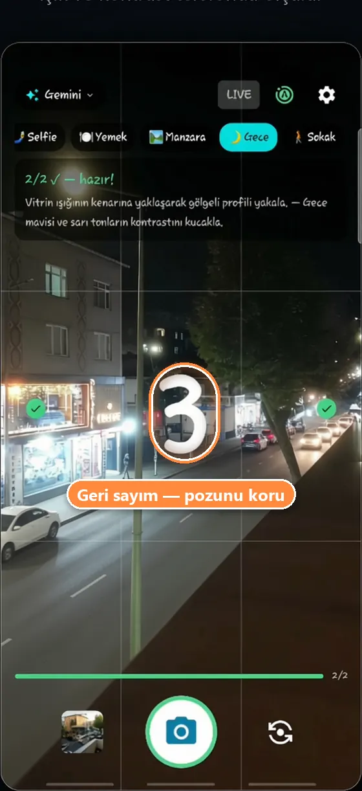
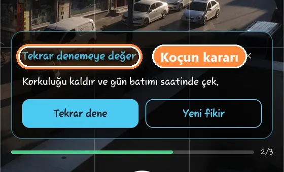
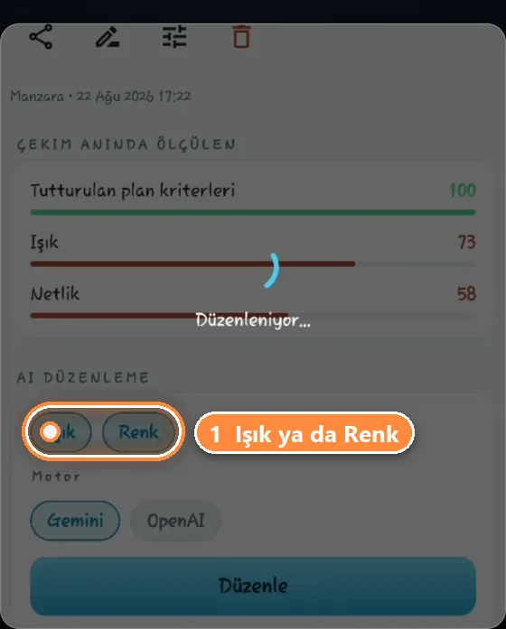
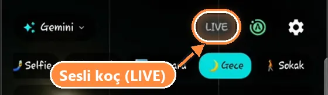

aursal.com/kamera-asistani/nasil-kullanilir
Kamera Asistanı nasıl kullanılır?
İlk fotoğrafın yedi adımda: koçu aç, modu seç, fikri bekle, tikleri tamamla — fotoğrafı koç çeker.
Başlamadan önce
Hesap açarken “Fotoğraflarımın AI sağlayıcıları tarafından işlenmesine onay veriyorum” kutusunu işaretle. Bu onay olmadan koç kapalı kalır; sonradan Profil ekranındaki “AI onayını aç” ile açabilirsin. Uygulama sorduğunda kamera iznini de ver.
Adım adım

Kamerayı aç
Ana sayfada günün fikrindeki “Hemen çek”e ya da alttaki kamera sekmesine dokun.

Koçu aç — en önemli adım
Kamera, koç kapalı (“Off”) olarak açılır; bir koç seçmeden hiç fikir gelmez. Sol üstteki düğmeye dokun ve bir koç seç — bir kez yeterli, uygulama seçimini hatırlar.
Koçlar hız ve ayrıntı bakımından farklıdır; günlük çekimler için listedeki ilk koç en hızlısıdır.
Sahnene uygun modu seç
Şeritten Portre, Selfie, Yemek, Manzara, Gece veya Sokak'ı seç. Mod, koçun neye bakacağını belirler: gece sabitliğe, yemek açıya, portre yüze odaklanır.

Fikri bekle, sonra tikleri tamamla
Telefonu sahneye çevir ve sabit tut. Birkaç saniye içinde koç ekranın üstüne bir çekim fikri yazar. “Görüntü analiz ediliyor…” yazıyorsa bekle.
Sonra fikre göre telefonu ayarla: her ölçüt (ışık, eğim, sabitlik, yüz konumu) tuttuğunda yeşil tike döner, sayaç 3/3'e kadar ilerler.


Fotoğrafı koç çeker
Bütün ölçütler tutunca 3-2-1 geri sayım başlar ve fotoğraf kendiliğinden çekilir. Sen yalnızca pozunu koru.
Sağ üstteki yeşil “A” otomatik çekimdir. Kapatırsan “Ölçümler tamam — deklanşör sende” yazar ve deklanşöre sen basarsın.

Kısa kritiği oku
Çekimden hemen sonra koç nasıl olduğunu söyler: “Bu kare tamam”, “Tekrar denemeye değer” ya da “Yerini değiştir” — yanında tek bir somut öneriyle.
“Tekrar dene” aynı fikirle yeniden çeker, “Yeni fikir” sahne için yeni bir plan ister.

Düzenle ve paylaş
Fotoğrafı galeriden aç: çekim anında ölçülen ışığı ve netliği görürsün. “AI düzenleme”den Işık veya Renk'i seç, “Düzenle”ye dokun, sonra üstten paylaş.
İşine yarayacaklar

Sesli koç (LIVE)
Kameradaki LIVE'a dokun; koç yönlendirmeyi sesli söyler, ekrana bakmadan poz verebilirsin. Dakikanı daha hızlı harcar.
Ücretsiz dakikalar
İlk 7 gün her gün 5 dakika ücretsiz; kullanmadığın dakikalar birikir. Bitince ana sayfadan reklam izleyerek +2 dakika alabilirsin, günde 3 kez.
En iyi sonuç için
Işığı konunun önüne al, telefonu iki elle tut ve koçun söylediklerini tek tek uygula — doğru olduğunda tikler sana söyler.